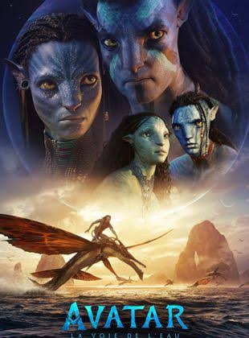

Avatar : La Voie De L'Eau
Se déroulant plus d’une décennie après les événements relatés dans le premier film, Avatar : La Voie De L'Eau raconte l'histoire des membres de la famille Sully (Jake, Neytiri et leurs enfants), les épreuves auxquelles ils sont confrontés, les chemins qu’ils doivent emprunter pour se protéger les uns les autres, les batailles qu’ils doivent mener pour rester en vie et les tragédies qu'ils endurent.
Pas encore disponible